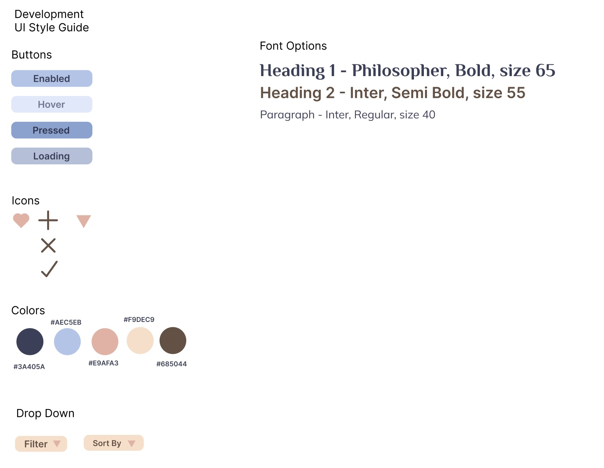

Development Assignment!
:D
Overview
I love music, and I love the different ways different music platforms have different favoriting functions, or different ways to add songs to playlists.
I was told to create a webpage that had favoriting, filtering, and
sorting features and so i did just that
here!
and the link to the redesigned website can be found
here!
Competitive Comparison
To begin, I first looked at three other sites, and from these sites i
evaluted what functions each one had and how it could add to the user
experience. Below is the comparison chart I made from them.
From this I decided to choose these features to filter my chosen thing
for. One of the functions I wanted to attempt to is the button changing
icons depending on if the item was favorited. I also really liked how
with multiple filtering options that if one filter was changed the
website would also filter using the other chosen filter as well.
Since I decided I wanted to do a webiste with songs and favoritng songs.
Planning
Lofi Sketches
I first created these lofi sketches to see what layout I liked best, or
if there was a different way to create a list of things
Style Guide
After having a decent sketch I then created a style guide for the
webiste
Hi-fi Prototype
From there I created a Hi-fi prototype in Figma.

this is what it looks like.
React
While I do feel more comfortable using HTML and CSS, adding react was a bit difficult. I have a grasp on how to use react, but using some react elements like the dropdowns, made it a bit more difficult for me to use CSS with them. From this experience I do want to learn more about CSS and make it so that I can customize just about any part of a website that uses react.
Because I wanted to have users make a playlist, I added two filters. One would filter the songs by artist, and the other would filter the songs by genre. Since most people have a favorite artist, or seem to know what kind of artists they like, and the same can be said for the genre of songs, this felt the most natural way to filter song choices.
I chose a variety of sorting options. I chose A-Z/Z-A for title and artist, and then I also chose to sort by song length. Chosing A-Z/Z-A for title and artist felt most intuitve for me since many other music platforms have that feature, and I added in the sorting by length so that if a person want to have a decently short playlist they could choose songs that best fit that requirement.
Conclustion
I feel like I learned a lot from this project. I was able to get a lot
of practice using react, and I was also able to practice my CSS skills. I'm still not quite satisfied at my skill level with CSS or react, and I hope to become more proficient at using them with smaller projects.
Again, to start making playlists go to this website
here!